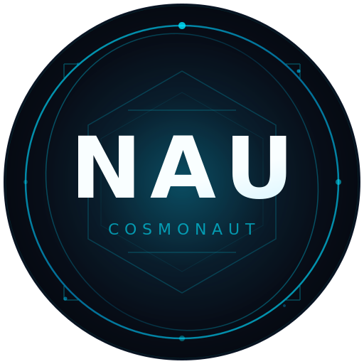

COSMONAUT TOKEN
NAU is the native utility token of the MultiNaut autonomous AI agent platform, built by Twenty Two Eleven Holdings. NAU powers inter-agent service calls, marketplace transactions, and the Naut Store economy on the XRP Ledger.